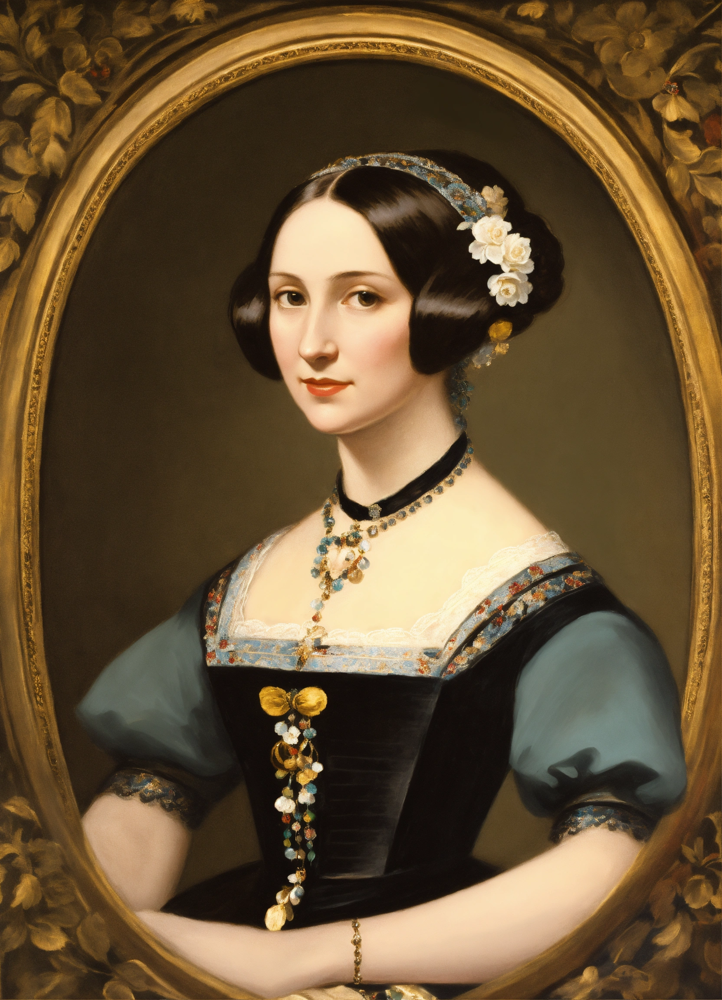

The World's First Computer Programmer
Augusta Ada King, Countess of Lovelace, was born in London in 1815, the only legitimate child of the poet Lord Byron. Her mother, fearing Ada might inherit her father's volatile temperament, pushed her toward the rigor of mathematics and science from a young age — an unusual education for a woman of her era, and one that would shape the entire course of her life.
In 1833, at just seventeen, Ada met Charles Babbage, the inventor of the Difference Engine and, later, the far more ambitious Analytical Engine — a mechanical device widely considered the conceptual ancestor of the modern computer. Where others saw an elaborate calculator, Ada saw something far larger: a machine capable of manipulating not just numbers, but symbols and patterns of any kind.
Between 1842 and 1843, Ada translated an Italian paper on the Analytical Engine, and in doing so, added her own extensive notes — nearly three times longer than the original text. Embedded within those notes was what many historians consider the world's first published computer algorithm: a method for the Engine to compute Bernoulli numbers.
More remarkably, Ada theorized that such a machine could one day go far beyond arithmetic — that it might compose music, produce graphics, and be used for practical and scientific purposes no one else had yet imagined. Over a century before the first electronic computer was built, she had already glimpsed what computing could become.
Born in London, daughter of Lord Byron and Anne Isabella Milbanke.
Meets Charles Babbage and is introduced to his Difference Engine.
Translates Menabrea's paper on the Analytical Engine and adds her own extensive notes, including the first published algorithm.
Publishes "Note G," describing a method for computing Bernoulli numbers — now regarded as the first computer program.
Dies in London at age 36. Her contributions remain largely unrecognized for over a century.
The U.S. Department of Defense names a programming language "Ada" in her honor.
"The Analytical Engine weaves algebraic patterns, just as the Jacquard-loom weaves flowers and leaves."